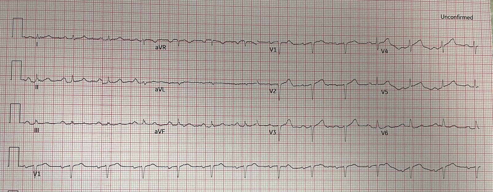
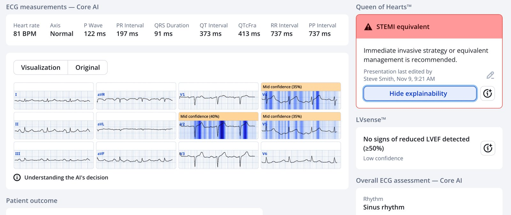
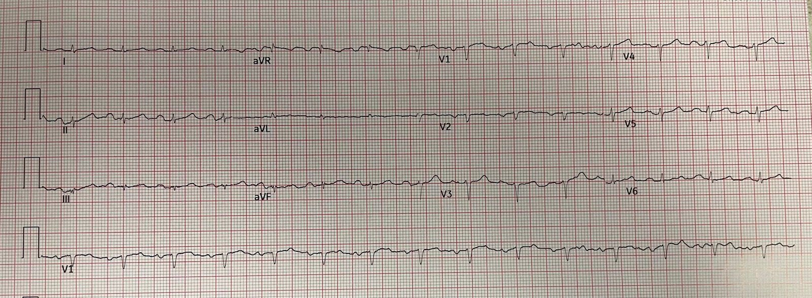
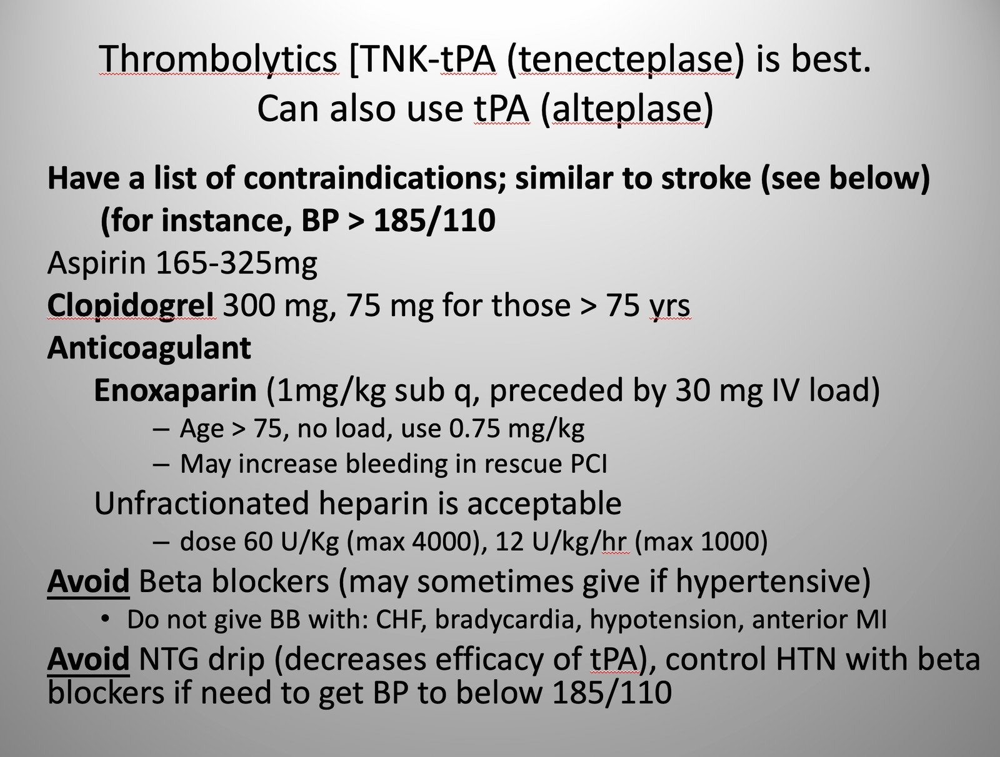
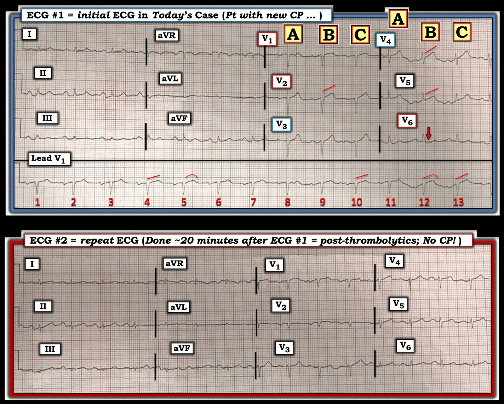

21/11/2025 — Bệnh nhân này có nên được dùng thuốc tiêu sợi huyết? Khi nào nên làm PCI sau tiêu sợi huyết?
Bản dịch tiếng Việt của bài "Should this patient get thrombolytics? When should PCI be performed after thrombolytics?" – Dr. Smith’s ECG Blog. Giữ nguyên toàn bộ 5 hình ảnh của bản gốc.


Ca này do một người bạn lâu năm gửi đến, anh ấy đang làm việc cùng một sinh viên trợ lý bác sĩ (physician assistant), Lily McLean. Cô ấy vừa mới tải Queen of Hearts về ngay phút đó, và ca bệnh này đã khiến cô trở thành người tin theo OMI.
Họ làm việc tại một bệnh viện không có khả năng làm PCI.
Lily và bạn tôi vào ca sáng và được bác sĩ cấp cứu ca trước bàn giao như sau: “Phụ nữ khoảng 60 tuổi đến viện tại thời điểm 0 vì cảm giác nặng ngực trái bắt đầu từ 3.5 giờ trước khi bà đang đi lại sinh hoạt ở nhà. Cơn đau tăng dần đều đến 8 hoặc 9/10. Không lan, không khó thở, buồn nôn nhẹ.”
“Không có bệnh mạch vành đã biết, hút thuốc lá, tăng huyết áp đã kiểm soát, béo phì mức độ vừa. Tôi đã cho aspirin, chỉ định định lượng troponin nhiều lần. Tôi đã định cho hỗn hợp thuốc tiêu hóa (GI cocktail) ở ‘bệnh nhân nguy cơ thấp’ này. ‘Điện tâm đồ không có dấu hiệu gì.‘ Máy tính ghi nhận sóng Q, có thể do nhồi máu cơ tim cũ.”
Đây là điện tâm đồ đó:

Bạn nghĩ gì?
Tôi đưa bản ghi này cho một bác sĩ tim mạch can thiệp có 30 năm kinh nghiệm xem, và ông ấy nói “Nhồi máu cơ tim thành trước cũ.”
Smith: Nhưng bản ghi này có giá trị chẩn đoán OMI LAD cấp. Có sóng QS ở V2, và ST chênh lên (STE) 0.5 mm ở các chuyển đạo V2,3, và 5, và 1 mm ở V4. Có sóng T tối cấp ở V2-5. [Đây là một NSTEMI có tắc mạch (NSTEMI-OMI)].
Bạn tôi không ưng điện tâm đồ này và bệnh nhân vẫn còn tả cơn đau 3/10. Bạn tôi đúng là đang giải thích những điểm đáng lo trên điện tâm đồ trong lúc Lily cài PMCardio Queen of Hearts vào điện thoại của cô. Cùng lúc đó, kết quả troponin đầu tiên trả về là 0.314 ng/mL.
Đây là kết quả đọc của Queen:


PMcardio for Individuals nay đã có mô hình Queen of Hearts mới nhất, khả năng giải thích của AI (bản đồ nhiệt màu xanh), và %Phân suất tống máu thất trái. Tải ngay cho iOS hoặc Android: https://individuals.pmcardio.com/app/promo?code=DRSMITH20. Là thành viên của cộng đồng chúng tôi, bạn có thể dùng mã DRSMITH20 để được giảm giá độc quyền 20% cho năm đầu tiên của gói đăng ký hằng năm. Tuyên bố miễn trừ: PMcardio đã được chứng nhận CE để lưu hành tại Liên minh châu Âu và Vương quốc Anh. Công nghệ PMcardio chưa được Cục Quản lý Thực phẩm và Dược phẩm Hoa Kỳ (FDA) cấp phép sử dụng lâm sàng tại Hoa Kỳ.
Bạn tôi đánh giá nguy cơ khi dùng tiêu sợi huyết của bà và bà không có chống chỉ định nào. Vì vậy anh ấy đã cho thuốc tiêu sợi huyết.
Bình luận: có những người cho rằng chỉ những bệnh nhân đạt tiêu chuẩn STEMI dựa trên milimét mới đủ điều kiện điều trị tiêu sợi huyết. Điều này thật nhảm nhí. Để bác bỏ nó, tôi sẽ phải viết cả một bài báo ở đây, nhưng KHÔNG có gì ủng hộ việc chỉ giới hạn tiêu sợi huyết cho những người đạt tiêu chuẩn. Nếu động mạch bị tắc hoặc gần tắc, và bạn không thể đưa bệnh nhân đi PCI đủ nhanh, thì có chỉ định dùng thuốc tiêu sợi huyết nếu nguy cơ không quá cao. Luôn phải nhớ rằng khoảng 1% bệnh nhân được dùng tiêu sợi huyết sẽ bị xuất huyết nội sọ. Xem bài báo trên NEJM ở cuối bài.
Ca bệnh tiếp diễn: Cơn đau của bà hết hoàn toàn rất nhanh, và chúng tôi ghi một điện tâm đồ khác 20 phút sau:


Toàn bộ STE và HATW đều đã hết. CẢ hết đau LẪN hồi phục trên điện tâm đồ: tái tưới máu.
Bạn tôi viết về sự lúng túng của nhiều bác sĩ tim mạch xung quanh vấn đề OMI (tương đương STEMI):
“Tôi gọi đến trung tâm tiếp nhận PCI và báo với điều dưỡng giám sát rằng tôi đã cho thuốc tiêu sợi huyết ở một bệnh nhân cần được chuyển để thông tim cấp cứu. Cô ấy nói – “ồ ý anh là một STEMI à?” Và tôi nói “không, một OMI,” rồi cố giải thích. Cuối cùng tôi bỏ cuộc – cô ấy cứ khư khư theo quy trình “STEMI” của họ và bối rối khi tôi nói cứ xử trí như một STEMI vì tôi đã bảo cô ấy là không có STE. Cô ấy gọi bác sĩ can thiệp. Tôi mô tả điện tâm đồ và nói với ông ấy rằng nó thể hiện một tương đương STEMI, rằng tôi đã cho thuốc tiêu sợi huyết, và báo kết quả troponin.”
Và anh ấy viết tiếp: “Ông ấy nói sẽ không thông tim cho bà cho đến ngày mai vì nguy cơ chảy máu sau tiêu sợi huyết. Rồi ông ấy cố bảo tôi không cần lo, rằng bà không thể đang bị tổn thương cơ tim tiếp diễn khi không có STE. Tôi nói với ông ấy là tôi không đồng ý. Rồi vì ông ấy không đưa bà thẳng vào phòng thông tim nên điều dưỡng giám sát nói tôi sẽ phải đợi cho đến khi họ có giường ICU trống thì họ mới nhận bệnh nhân. Biết bao nhiêu khâu phía sau bị rối tung vì cứ bám lấy mô hình STEMI này. Ơn trời là ít nhất bác sĩ tim mạch cũng có ý kiến rằng họ cần nhận bà ngay theo hình thức chuyển từ khoa cấp cứu sang khoa cấp cứu.”
“Bác sĩ tim mạch không muốn bệnh nhân này được dùng thuốc tiêu sợi huyết. Có lẽ họ hiếm khi gặp tình huống này vì thường thì ở đó bệnh nhân được đưa thẳng đi thông tim, và có lẽ họ chưa từng thấy bác sĩ tuyến huyện cho thuốc tiêu sợi huyết khi không có STE điển hình. Tôi nói với ông ấy rằng tiêu sợi huyết là điều duy nhất tôi có thể làm để giúp bệnh nhân này, người ở cách PCI ít nhất 3 giờ. Họ chỉ là không nhìn thấy bức tranh toàn cảnh và tiếp cận vấn đề này theo một cách rất đơn giản, máy móc, vì lợi ích của mình và chẳng cần suy nghĩ.”
Kết cục: Vì bệnh nhân đã được tái tưới máu, và vẫn hết đau mà không có thêm bằng chứng thiếu máu cục bộ nào trên điện tâm đồ, việc chụp mạch vành được trì hoãn một cách hợp lý đến ngày hôm sau, khi đó cho thấy tổn thương thủ phạm với mức hẹp tồn lưu 80%, nhưng LAD chỉ có 2 mm, quá nhỏ để làm PCI. Bà được chuyển phẫu thuật CABG. Không có dữ liệu siêu âm tim hay troponin, cũng như các điện tâm đồ về sau.
Khi nào cho thuốc tiêu sợi huyết nếu bạn không ở trung tâm có PCI:
- Nếu thời gian từ lần tiếp xúc y tế đầu tiên (nhân viên cấp cứu đến nhà bệnh nhân) đến PCI (tại trung tâm PCI) sẽ > 120 phút, và chắc chắn là OMI cấp, hãy cho thuốc tiêu sợi huyết, rồi chuyển viện.
- Nếu thời gian từ Cửa (tại bệnh viện nhỏ) đến Bóng (tại trung tâm PCI) > 90 phút, hãy cho thuốc tiêu sợi huyết, rồi chuyển viện.
- Thời gian vào cửa–ra cửa (door-in-door-out) không nên vượt quá 30 phút.
- Chỉ khoảng 25% ca chuyển viện đạt được thời gian từ lần tiếp xúc y tế đầu tiên đến PCI < 120 phút, vì vậy trong đa số trường hợp nên cho thuốc tiêu sợi huyết.
- Thuốc tiêu sợi huyết hiệu quả nhất khi dùng sớm sau khởi phát đau ngực và, quan trọng hơn, khi Mức độ cấp tính trên điện tâm đồ cao.
- Đây là tóm tắt ngắn về mức độ cấp tính cao, trích từ bài đó: Sóng T tối cấp cho thấy còn một lượng lớn cơ tim còn sống, có thể cứu được. Sóng Q cho thấy mức độ cấp tính thấp hơn, nhưng có thể xuất hiện sớm trong nhồi máu cơ tim thành trước; vì vậy, trong nhồi máu cơ tim thành trước, sóng T quan trọng hơn. Sóng T đảo ngược biểu thị hoặc mức độ cấp tính thấp hoặc động mạch đã thông.
Đây là phác đồ được khuyến cáo cho thuốc tiêu sợi huyết:


Khi nào bệnh nhân cần được PCI ngay sau tiêu sợi huyết, và khi nào nên chờ:
Những bệnh nhân không được tái tưới máu sau tiêu sợi huyết, được nhận biết qua hồi phục trên điện tâm đồ và hết đau, nên được đưa ngay vào phòng thông tim sau khi đến cơ sở tiếp nhận chuyển viện. Ở bệnh nhân có ST chênh lên đủ tiêu chuẩn chẩn đoán, bằng chứng tái tưới máu là ST chênh lên giảm ít nhất 70%. Với những bệnh nhân chỉ có HATW, tái tưới máu chưa được định nghĩa cụ thể. Trong ca này, các HATW rõ ràng đã hết.
Đây được gọi là “PCI cứu vãn” (Rescue PCI).
Đối với bệnh nhân nhồi máu cơ tim ST chênh lên (STEMI) nguy cơ cao đã được dùng thuốc tiêu sợi huyết, hướng dẫn ACC/AHA khuyến cáo PCI sớm (trong vòng 2 đến 6 giờ) cho bệnh nhân có một chỉ dấu nguy cơ cao, như ST chênh lên kéo dài, đau ngực, hoặc mất ổn định huyết động.
Tuy nhiên, PCI thường quy ngay sau tiêu sợi huyết ở bệnh nhân không triệu chứng không mang lại lợi ích. Với bệnh nhân nguy cơ thấp đã tái tưới máu nhờ tiêu sợi huyết, nên chờ rồi mới làm PCI: “Hướng dẫn của Trường Môn Tim mạch Hoa Kỳ (ACC) và Hội Tim mạch Hoa Kỳ (AHA) nêu rằng PCI thường quy ngay sau tiêu sợi huyết thành công trong nhồi máu cơ tim ST chênh lên (STEMI) không mang lại lợi ích và có thể gây hại. Thay vào đó, khuyến cáo PCI cứu vãn (khi tiêu sợi huyết thất bại), và đề xuất PCI chương trình sớm trong vòng 2 đến 24 giờ cho nhiều bệnh nhân đã được điều trị thành công ban đầu bằng thuốc tiêu sợi huyết. Chiến lược PCI tiên phát được ưu tiên nếu có thể đưa bệnh nhân đến bệnh viện có khả năng làm PCI trong vòng 90 phút kể từ lần tiếp xúc y tế đầu tiên.
Đây là bài báo đặt nền móng cho PCI cứu vãn, đăng trên NEJM năm 2005: Rescue Angioplasty after Failed Thrombolytic Therapy for Acute Myocardial Infarction (Nong mạch cứu vãn sau điều trị tiêu sợi huyết thất bại trong nhồi máu cơ tim cấp)
Đây là bài báo liên quan nhất, nghiên cứu TRANSFER-AMI của Cantor và cs. trên tạp chí New England Journal. Routine Early Angioplasty after Fibrinolysis
for Acute Myocardial Infarction (Nong mạch sớm thường quy sau tiêu sợi huyết trong nhồi máu cơ tim cấp)
= = =
======================================
BÌNH LUẬN CỦA TÔI, bởi KEN GRAUER, MD (21/11/2025):
Những ca như ca được trình bày hôm nay thật đáng bực bội — khi chúng ta biết chăm sóc tối ưu là gì, nhưng bất chấp mọi nỗ lực của chúng ta — việc giải thích tiền đề của mô hình OMI đơn giản là không thể với những đồng nghiệp phủ nhận sự tồn tại của OMI (tức là, Phủ nhận thực tế lâm sàng rằng nhiều trường hợp tắc mạch vành cấp đơn giản là không tạo ra ST chênh lên đủ để được xếp là “STEMI” — hoặc ngay cả khi cuối cùng có tạo ra, thì thường phải đến rất muộn về sau trong diễn biến các đoạn ST mới chênh lên).
= = =
Điện tâm đồ ban đầu:
Để rõ ràng và dễ so sánh, trong Hình 1 — tôi đặt cạnh nhau điện tâm đồ ban đầu của ca hôm nay và điện tâm đồ ghi lại khoảng ~20 phút sau khi bắt đầu dùng thuốc tiêu sợi huyết, lúc đó CP (đau ngực) của bệnh nhân về cơ bản đã hết.
- Tuy kín đáo — điện tâm đồ ban đầu trong Hình 1 chắc chắn không phải là “không có dấu hiệu gì trên điện tâm đồ”. Ngược lại (như bác sĩ Smith và kết quả đọc của QOH đã nêu) — có sóng T tối cấp ở các chuyển đạo trước tim, có giá trị chẩn đoán tắc LAD cấp cho đến khi chứng minh được điều ngược lại.
= = =
Tôi xin bổ sung những suy nghĩ sau về điện tâm đồ #1:
- Có điện thế thấp ở cả các chuyển đạo chi (tức là, ≤ 5 mm ở cả 6 chuyển đạo chi) lẫn các chuyển đạo trước tim (tức là, ≤ 10 mm ở cả 6 chuyển đạo trước tim). Ở một bệnh nhân đang được đánh giá vì CP mới xuất hiện — điều này có ý nghĩa, vì điện thế thấp có thể phản ánh tình trạng “choáng” cơ tim do một vùng nhồi máu rộng đang diễn ra (Bấm vào ĐÂY — để biết thêm về ý nghĩa lâm sàng của điện thế thấp).
- Có nhiều nhiễu đáng kể, nhất là ở các chuyển đạo trước tim — dẫn đến thay đổi rõ rệt về hình dạng sóng ST-T. Điều này gây khó khăn — vì nó làm cho việc xác định phức bộ QRS nào ở các chuyển đạo trước tim thể hiện hình dạng sóng ST-T “thật” trở nên khó khăn.
- Ví dụ, ở một bệnh nhân có CP mới xuất hiện — các phức bộ “B” và “C” ở chuyển đạo V1 lập tức đập vào “mắt” tôi vì các đoạn ST này có dạng vòm và chênh lên nhẹ (nhưng không tương xứng) so với sóng S rất nhỏ ở chuyển đạo này. Bất thường sóng ST-T này không thấy ở phức bộ “A”, vốn bị biến dạng do nhiễu. Vì vậy tôi xem tiếp dải nhịp dài chuyển đạo V1 bên dưới điện tâm đồ 12 chuyển đạo — cho phép 13 “lần nhìn” vào hình dạng sóng ST-T ở chuyển đạo V1. Tôi đã vẽ bằng màu ĐỎ 5 sóng ST-T trên dải nhịp dài V1 rõ ràng là bất thường ( = các đoạn ST trên dải nhịp dài V1 của các nhát #4,5; 10; 12,13) — trong khi 8 sóng ST-T còn lại trên dải nhịp dài V1 này trông không bất thường bằng, theo tôi.
- Điểm MẤU CHỐT: Lý do việc đánh giá sóng ST-T ở chuyển đạo V1 quan trọng đối với tôi khi diễn giải — là vì một khi tôi biết ở một bệnh nhân có CP mới xuất hiện rằng 1 hoặc 2 chuyển đạo chắc chắn bất thường — thì khả năng những bất thường sóng ST-T nhẹ hơn ở các chuyển đạo lân cận là “thật” và phản ánh một biến cố cấp đang tiến triển sẽ cao hơn nhiều.
- Tôi đã tô bằng các đường ĐỎ những sóng ST-T ở chuyển đạo trước tim (của phức bộ “B” ở các chuyển đạo V2,V4,V5) mà ở đó rõ ràng có ST thẳng đuỗn và sóng T “đồ sộ” không tương xứng. Tôi kém chắc chắn hơn rằng phức bộ “A” ở từng chuyển đạo trong 6 chuyển đạo trước tim là bất thường.
- Cuối cùng — phức bộ “B” (nhưng không phải “A” và “C”) ở chuyển đạo V6 dường như gợi ý ST dẹt kèm chênh xuống nhẹ (mũi tên ĐỎ) — mà nếu là thật, có thể phù hợp với xoáy trước tim (Precordial Swirl) khi xét đến hình dạng sóng ST-T ở “B” và “C” ở các chuyển đạo trước tim khác.
ĐIỀU CỐT LÕI: Khi phải đưa ra quyết định then chốt là tranh luận mạnh mẽ đến đâu với những người “không tin” OMI và có dùng thuốc tiêu sợi huyết hay không khi không đạt tiêu chuẩn STEMI — Chúng ta muốn có được một bản ghi tốt nhất có thể về mặt kỹ thuật, để tối ưu hóa độ tin cậy của việc diễn giải.
- Dù vậy — ngay cả với những thay đổi hình dạng sóng ST-T do nhiễu đã mô tả ở trên trong điện tâm đồ #1 — điện tâm đồ ban đầu này trông giống một tắc LAD cấp đang tiến triển.
- Nhưng nếu còn nghi ngờ — thì hãy ghi lại điện tâm đồ ngay.
= = =
Hình 1: So sánh giữa điện tâm đồ ban đầu — và điện tâm đồ ghi lại khoảng ~20 phút sau khi bắt đầu dùng thuốc tiêu sợi huyết (lúc đó bệnh nhân đã hết đau! ).


= = =
Điện tâm đồ ghi lại:
Biến dạng do nhiễu ít hơn (dù chưa hết hẳn) ở điện tâm đồ #2. Dù vậy — so sánh từng chuyển đạo một về hình dạng sóng ST-T cho thấy rõ sự cải thiện đáng kể, với các sóng ST-T “đồ sộ” quá mức đã xẹp xuống rõ rệt ở hầu như tất cả các chuyển đạo trước tim.
- Cùng với việc hết hoàn toàn CP đồng thời trong vòng 20 phút sau khi bắt đầu điều trị tiêu sợi huyết — mức độ cải thiện thấy trên điện tâm đồ ghi lại chứng minh rằng dù không đạt tiêu chuẩn STEMI — điện tâm đồ ban đầu là hậu quả của tắc LAD cấp.
- T.B. (P.S.): Nếu có khác biệt thì — điện thế QRS còn thấp hơn ở điện tâm đồ ghi lại. Tôi rất tò mò về mặt chuyên môn liệu điện thế thấp đáng kể này có phải là hậu quả của choáng cơ tim, may mắn đã được giảm nhẹ nhờ khởi động điều trị tiêu sợi huyết kịp thời hay không. Sẽ rất thú vị nếu được xem liệu thêm một chút thời gian có mang lại kết cục lâm sàng tốt (đi kèm với việc cuối cùng biên độ QRS trở về bình thường) hay không.
- ĐIỀU CỐT LÕI: Sự quyết đoán trong việc dùng điều trị tiêu sợi huyết cho ca STEMI-/OMI+ này có thể đã cứu sống bệnh nhân.
= = =